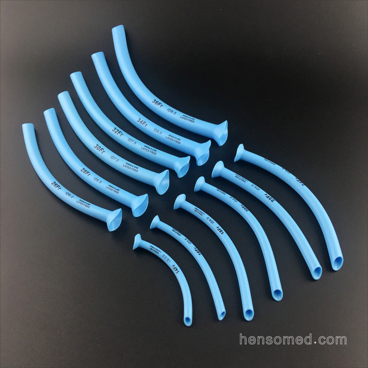

Ambulancens inventar
Klik på et stykke udstyr for at se billede, beskrivelse og brug.
Søg i udstyr:
OPA
Bruges til at holde frie luftveje.
Udstyrsnavn
Kort tagline / funktion.

NPA
Kort tagline / funktion.
×
Beskrivelse